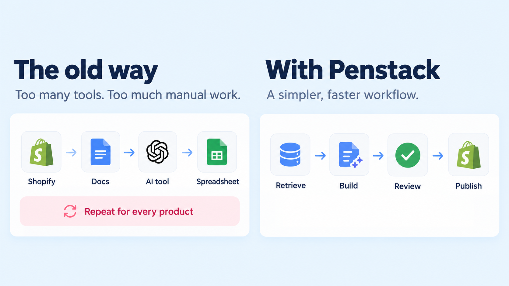
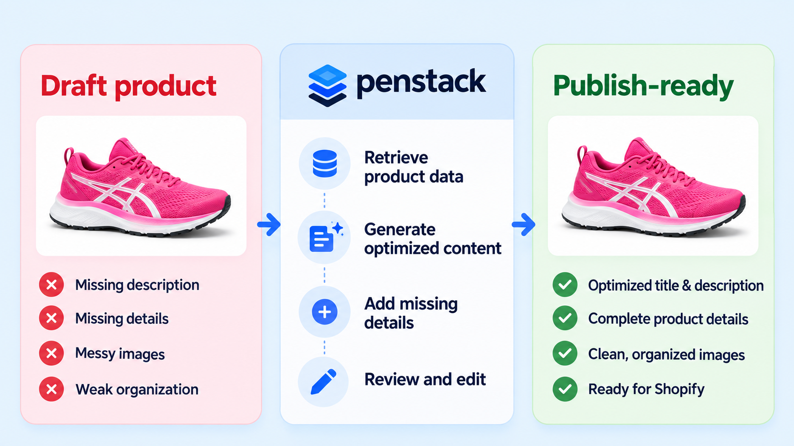
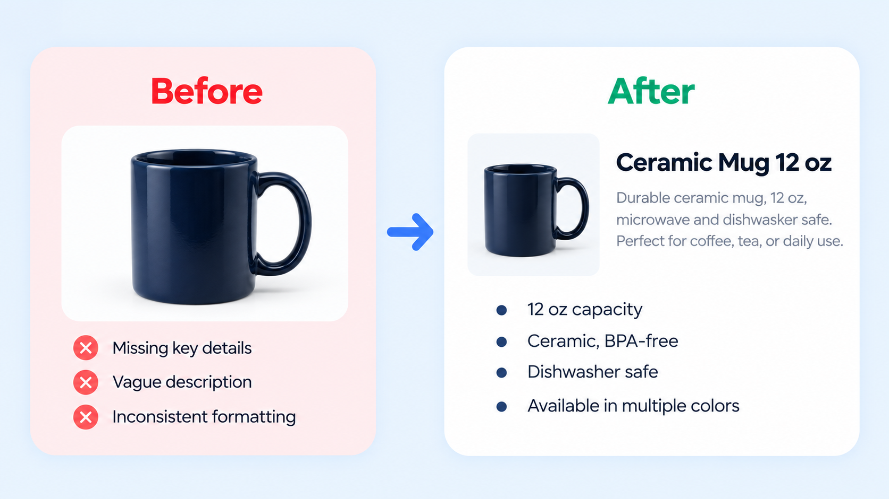
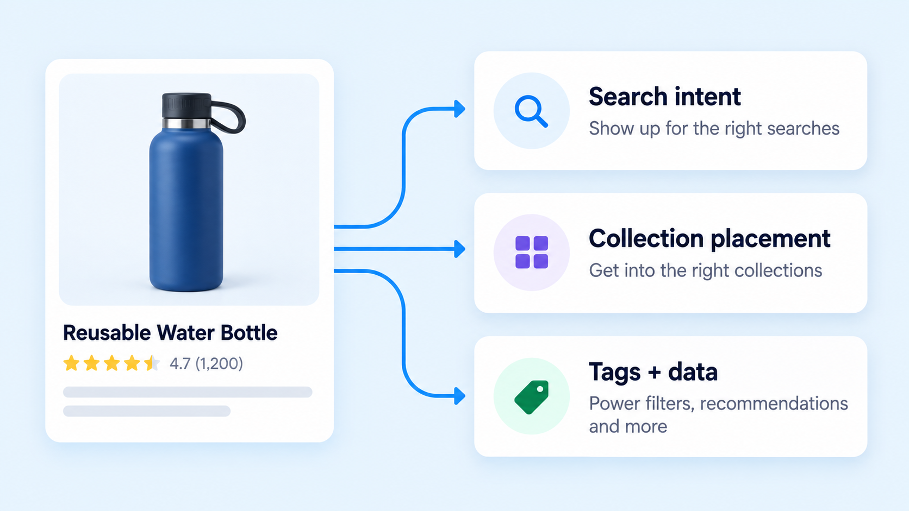
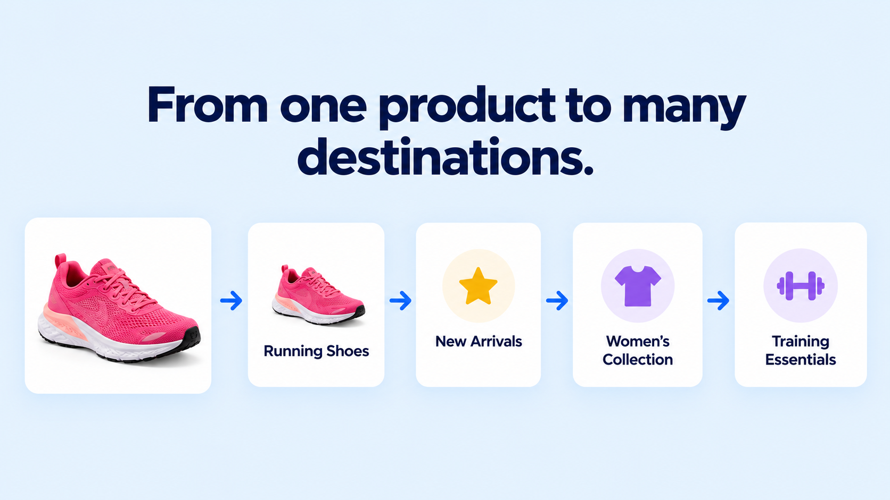
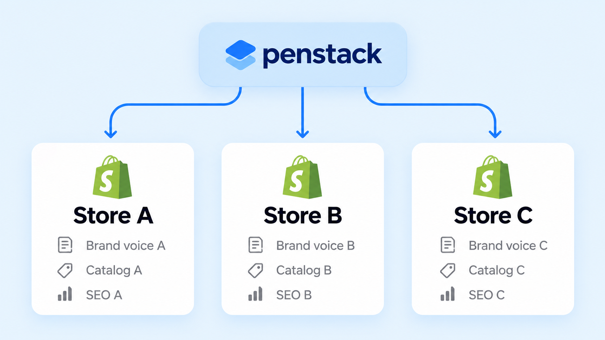
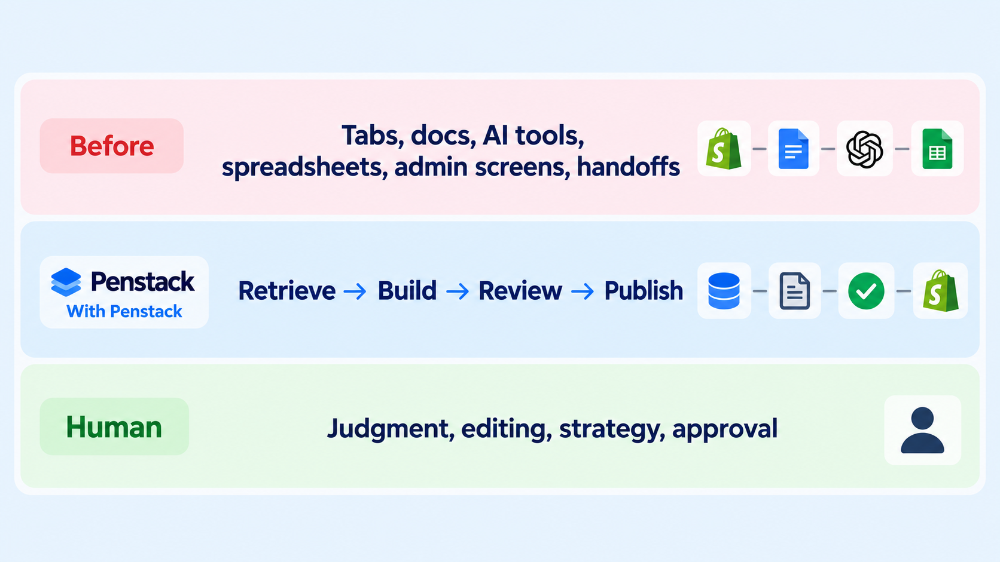

Give drafts a familiar voice.
Solo, Pro, and Agency include the ten-question Brand Voice quiz. Pro and Agency keep each connected store’s voice separate.
USE CASES
A new launch needs copy. An older listing needs better details. A growing catalog needs consistency. Start with the job your store needs done.

The product is ready to meet customers. Retrieve its Shopify draft, explain what makes it useful, and finish the details shoppers will look for.

An old description may say “great for everyday use” without explaining size, materials, or care. Bring in the listing and replace vague language with verified details.

A shopper searching for a “dishwasher-safe ceramic mug” has told you what matters. If your product fits, explain those details clearly. That is search intent in practice.

One running shoe can belong in Running Shoes, New Arrivals, and Training Essentials. Review the product’s attributes, then assign tags and collections that make sense for your store.

A skincare store and a snowboard store need different language. On Pro and Agency, keep each store’s Brand Voice, product data, and SEO context separate.

SMALL DETAILS. USEFUL DIFFERENCES.
A strong description is a start. Image text, custom fields, and a careful review help finish the listing.
Solo, Pro, and Agency include the ten-question Brand Voice quiz. Pro and Agency keep each connected store’s voice separate.
Prepare alt text for the actual view in each photo. Check that the wording helps someone understand the image.
Add accurate materials, care information, and other supported Shopify custom fields.
Check the facts, image text, and organization before you publish the updates.
THE HABIT WORTH KEEPING
The products will change. The useful questions stay familiar: Is the information accurate? Is the description clear? Is the item organized where it belongs?
Get started →
START WITH THE LISTING THAT NEEDS YOU.
Start with a new draft or an existing listing. See how penstack helps prepare the content and details.
See how penstack works →